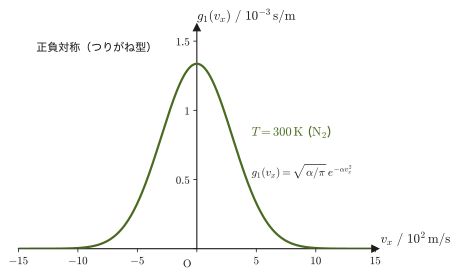
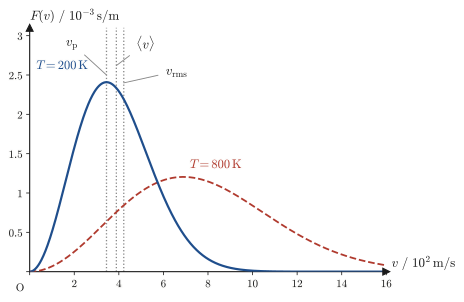

第34章熱統計力学への入口 — マクスウェルの速度分布
ここまでの熱力学は，圧力 $p$，体積 $V$，温度 $T$，内部エネルギー $U$，エントロピー $S$ といった，気体を1つの「かたまり」として扱ったときに測れる量（マクロな量）だけを使って組み立てられてきた．気体が本当は莫大な数の分子の集まりであることには，気体分子運動論を扱った第24章で少し触れた程度である．しかし，物理学者はいつも「マクロな法則の裏側で，ミクロな分子は実際にどう振る舞っているのか」を知りたがってきた．この最後の章では，その入口に立つ．気体分子1個1個の速度がどのように分布しているかという確率的な法則——マクスウェルの速度分布則（Maxwell's velocity distribution law）——を，「速度の3つの成分は互いに独立である」「圧力は分子の衝突によって生じる」という2つの仮説から導き，そこから圧力という巨視的な量を作り直せることを確かめる．
この章は，熱力学から統計力学（statistical mechanics）への橋渡しである．分子の速度分布から熱力学の量を組み立てる考え方（熱統計力学）は，もっと大きな体系である統計力学の入口にあたり，それを本格的に扱うのは本書の第VII部の仕事である．この章では，分布関数の考え方，分子の衝突から圧力を計算する方法，そして速さの分布とその特徴的な速さ（最確速さ・平均の速さ・2乗平均速さ）までを丁寧に追い，最後に第IV部全体を振り返って「続きは第VII部で」と橋渡しをする．
本題に入る前に，なぜこのような「ミクロからの再導出」が必要とされたのか，少し歴史を振り返っておこう．
- 熱統計力学がめざすもの——熱力学の物理量をミクロな分子運動から再定義し，マクロな定義と一致することを確かめるという方針
- 分布関数 $f(v_x,v_y,v_z)$ の定義と，気体分子が入れ物の中に一様に分布するという仮説
- マクスウェルの独立性の仮説——3方向の速度成分が互いに独立であるという仮定と，空間の等方性から，分布関数の関数形が指数関数（ガウス型）に決まること
- 気体の圧力を，分子が壁（に相当する面）に衝突するときの力積の総和として計算する方法
- マクスウェルの速度分布則 $f(v_x,v_y,v_z)=\rho\left(\dfrac{m}{2\pi k_{\mathrm B}T}\right)^{3/2}\exp\!\left[-\dfrac{m(v_x^2+v_y^2+v_z^2)}{2k_{\mathrm B}T}\right]$ の完全な導出
- 速さの分布 $4\pi v^2f(v)$ と，そこから求まる最確速さ・平均の速さ・2乗平均速さ，そして $\langle v^2\rangle=3k_{\mathrm B}T/m$ がエネルギー等分配則と矛盾しないこと（分子の衝突＝圧力という仮説の無矛盾性の確認）
記号についての注意：本章では，規格化定数を $A$，指数関数の係数を $\alpha$，分子の数密度を $\rho$ と書く．熱力学の他の章（$A$ はヘルムホルツエネルギー，$\alpha$ は熱膨張率）や電磁気学の章（$\rho$ は電荷密度）とは別の意味で使う．
もとにしたノート：望月泰英『物理学ノート 熱力学』 pp. 69–72．
34.1 熱統計力学の目的
熱力学（第23章から第32章）は，「実験でくり返し確かめられた関係を，数式にまとめられればそれでよい」という立場で組み立てられた学問である．気体の状態方程式 $pV=nRT$ や，熱力学の第1法則・第2法則は，まさにこの立場で作られた法則である．圧力・温度・エントロピーは，すべて「気体をひとかたまりとして扱ったときに，実験で測れる量」として定義され，それらの間の関係だけが調べられてきた．
一方で，「気体は無数の分子の集まりであり，圧力や温度は分子の運動の現れである」と考える立場もある．気体分子運動論は，19世紀の半ばにマクスウェル（James Clerk Maxwell）やボルツマン（Ludwig Boltzmann）らによって発展し，のちに統計力学（statistical mechanics）へと育った．
20世紀に入って量子力学（quantum mechanics）が急速に発展すると，物理量そのものの意味が改めて問い直されるようになった．電子の位置を測ろうとすると運動量が乱れる，光は粒子でもあり波でもある，といった常識では捉えにくい結果が次々と現れ，物理学者は「そもそも位置とは何か，運動量とは何か」という，それまで当たり前だと思っていた概念にまで立ち返らざるを得なくなった．「実験に基づいて物理量を数式化し，それを定義とすればよい」という素朴な立場に，危機感が生まれたのである．もし，圧力や温度のようなマクロな量を，気体分子1個1個の運動（ミクロな観点）から出発して説明し直すことができ，しかもそれが以前からのマクロな定義と矛盾なく一致するならば——そのときはじめて，マクロな定義が単なる便宜的な数式ではなく，ミクロな実体に裏付けられたものだと言えるのではないか．この問いに答えようとする分野が，熱統計力学（statistical thermodynamics）である．
豆知識：分子の実在が実験で確かめられたのは20世紀の初め
「物質は原子・分子からできている」という考え方は，アボガドロ（Amedeo Avogadro，1776～1856）が提唱したことで知られているが，この考えが実験的に検証され，広く受け入れられるようになったのは20世紀の初めになってからである．ジャン・ペラン（Jean Perrin）による，ブラウン運動の精密な測定（1908年前後）などを通じて，ようやく分子の実在——そしてその数（アボガドロ定数 $N_{\mathrm A}$）——が実証された．マクスウェル（1831～1879，本章の主役）が速度分布則を導いたのは1860年ごろであり，分子の実在が実験で確認されるよりも半世紀近く前のことである．つまりマクスウェルは，分子が実在するかどうかがまだ決着していない時代に，「もし気体が分子の集まりだとしたら」という仮説の上に理論を組み立てていたことになる．
「あることを2通り以上の方法で説明できて，はじめて本当に分かったといえる」という考え方は，リチャード・ファインマン（Richard Feynman，1918～1988）のものとして紹介されることが多い．ただし，原典は確認できていない．ここでは，この考え方だけを借りることにする．
この考え方は，まさに熱統計力学が目指すものを言い当てている．圧力や温度を「マクロな量として定義し，マクロな法則の中だけで扱う」という1つ目の説明の方法に加えて，「無数の分子の運動から統計的に導く」という2つ目の説明の方法を手に入れることができれば，私たちは圧力や温度について，以前よりずっと深く「分かった」と言えるようになる．熱統計力学は，熱力学の物理量をミクロな観点から再定義し，それがマクロな観点からの定義と一致することを示すと同時に，ミクロな観点からしか分からなかったこと——たとえば「同じ温度の気体でも，分子1個1個の速さはバラバラである」といった事実——をあぶり出してくれる．本章と，のちに第VII部で本格的に展開する統計力学は，まさにこの2つ目の説明の方法を作る試みである．これを念頭に置いて，読み進めていこう．
例題34.1 2つの説明の方法を身近な例で確かめる
すでに学んだ物理量の中から1つ選び，それについて「少なくとも2つ以上の説明の方法」を持てているかどうかを検討せよ．例として，気体の圧力について考えてみよ．
解答 気体の圧力 $p$ については，少なくとも次の2つの説明の方法をすでに持っている．
(i) マクロな説明：圧力とは，単位面積あたりに気体が及ぼす力である（第23章）．理想気体では $pV=nRT$ という状態方程式に従う量として定義され，体積や温度と組み合わせて気体の状態を特徴づける．
(ii) ミクロな説明：圧力とは，無数の気体分子が容器の壁に衝突するときに及ぼす力積の，単位時間・単位面積あたりの合計である（第24章 24.2節，そして本章34.3節・34.4節で改めて導く）．
この2つの説明は，出発点（一方は巨視的な現象論，他方は分子1個1個の力学）がまったく異なるにもかかわらず，同じ量 $p$ について同じ法則（$pV=nRT$）に到達する．2つの説明の方法を持てたのだから，圧力について「本当に分かった」と言える状態に近づいている——そして，この2つの説明が実際に矛盾しないことを確かめる作業こそが，本章のテーマである．
34.2 分布関数とマクスウェルの独立性の仮説
体積 $V\ [\mathrm{m^3}]$ の容器の中に，同じ種類の気体分子が $N$ 個入っているとする．分子は容器の中を飛び回っており，ある瞬間に見れば，位置も速度もばらばらである．そこで，位置 $(x,y,z)$ と速度 $(v_x,v_y,v_z)$ の両方について，「その近く」にいる分子の数を数える関数を導入する．
定義34.1 分布関数（distribution function）
位置が $(x,y,z)\sim(x+\dd x,y+\dd y,z+\dd z)$ の範囲内にあり，かつ速度が $(v_x,v_y,v_z)\sim(v_x+\dd v_x,v_y+\dd v_y,v_z+\dd v_z)$ の範囲内にある分子の数が
$$ f(v_x,v_y,v_z)\,\dd x\,\dd y\,\dd z\,\dd v_x\,\dd v_y\,\dd v_z $$となるように，関数 $f$ を定義する．これを分布関数という．
この定義そのものは，まだ何も仮定していない——単に「その近くにいる分子の数」を，位置と速度の6つの変数の関数として書き表しただけである（位置3つ＋速度3つで，合わせて6次元の「位置・速度空間」を考えていることになる）．なお，$\dd x$ のような微小量を掛けたものが「個数」（無次元）になるので，$f$ の単位は $1/(\mathrm{m^3}\cdot(\mathrm{m/s})^3)=\mathrm{s^3/m^6}$ である．
ここからが物理である．気体が容器の中で偏りなく散らばっていて，特定の場所に固まっていないなら，「その近くにいる分子の数」は，位置 $(x,y,z)$ をどこに取っても（同じ体積要素 $\dd x\,\dd y\,\dd z$ である限り）変わらないはずである．つまり，$f$ は位置には依存しないと考えてよい：
注意：これは仮説である
「気体分子が容器内に一様に分布する」というのは，実験事実からの自然な仮定ではあるが，あくまで仮説である．もしこの仮説が偽であれば（たとえば分子が容器の片隅に偏って集まっているなら），以下の議論はすべて成り立たなくなり，矛盾が生じる．実際には，気体分子どうしが絶えず衝突をくり返すことで，容器内のどの場所も平等に訪れるようになり，この仮説は極めてよい近似で成り立つ．
この仮説のもとで，$f$ は位置 $(x,y,z)$ に依存しない，速度だけの関数 $f(v_x,v_y,v_z)$ になる．このとき，容器内の全分子数 $N$ は，定義34.1の $f$ を位置と速度のすべての範囲にわたって足し合わせた（積分した）ものに等しい：
導出：全分子数 $N$ と体積 $V$ の関係
定義34.1の $f\,\dd x\,\dd y\,\dd z\,\dd v_x\,\dd v_y\,\dd v_z$ を，位置については容器の内部全体（体積 $V$），速度についてはあらゆる値（$-\infty$ から $\infty$）にわたって積分すると，全分子数 $N$ になる：
$$ N=\int f(v_x,v_y,v_z)\,\dd x\,\dd y\,\dd z\,\dd v_x\,\dd v_y\,\dd v_z $$いま $f$ は位置に依存しないので，位置についての積分では $f$ を定数として積分の外に出すことができ，
\begin{equation} N=\underbrace{\int \dd x\,\dd y\,\dd z}_{=\,V}\cdot\int f(v_x,v_y,v_z)\,\dd v_x\,\dd v_y\,\dd v_z = V\int f(v_x,v_y,v_z)\,\dd v_x\,\dd v_y\,\dd v_z \label{eq:34-N-V-f} \end{equation}となる．最初の積分 $\displaystyle\int\dd x\,\dd y\,\dd z$ は容器の体積 $V$ そのもの（たとえば一辺 $L$ の立方体容器なら $L^3$）である．位置についての積分を先に実行して $V$ という因子にできるのは，被積分関数 $f$ が位置 $x,y,z$ に依存しないからである．
式 \eqref{eq:34-N-V-f} は，あとで何度も使う関係なので覚えておこう．さて，速度についての関数 $f(v_x,v_y,v_z)$ は，$v_x,v_y,v_z$ という3つの変数が絡み合った，一般にはどんな形をしているか分からない関数である．マクスウェルは，ここで大胆な仮説を置いた．
仮説34.1 マクスウェルの独立性の仮説（Maxwell's hypothesis of independence）
気体分子の速度の3つの成分 $v_x,v_y,v_z$ の分布は，互いに独立である．すなわち，分布関数は3つの1変数関数の積の形に書ける：
\begin{equation} f(v_x,v_y,v_z)=g(v_x)\,g(v_y)\,g(v_z) \label{eq:34-independence} \end{equation}ここで $g$ は，1つの速度成分についての分布を表す，共通の1変数関数である（$x,y,z$ の3方向のどれも特別扱いしないので，同じ関数 $g$ を使う）．
イメージ：独立とはどういうことか
「独立」という言葉の意味は，サイコロを3回振る場合を考えるとわかりやすい．1回目に3の目が出る確率と，2回目に5の目が出る確率が互いに影響し合わない（1回目の結果が2回目の出方を変えない）とき，2つの事象は独立といい，同時に起こる確率は各々の確率の積になる（大学数学 第13章 13.5節）．3つのサイコロの目が $1,1,1$ になる確率は $\frac16\times\frac16\times\frac16=\frac1{216}\approx0.00463$ である．仮説34.1は，これと同じ発想を気体分子の速度に当てはめたものである——ある分子の $x$ 方向の速度が大きいからといって，その分子の $y$ 方向や $z$ 方向の速度が特に大きくなったり小さくなったりする理由はない，という自然な仮定である．「3つのサイコロの目」を「速度の3成分 $v_x,v_y,v_z$」に，「確率 $1/6$」を「1変数分布 $g(v_i)$」に置き換えれば，同時分布 $f(v_x,v_y,v_z)=g(v_x)g(v_y)g(v_z)$ は，$(1/6)^3$ とまったく同じ「独立だから積になる」という論理でできている．サイコロの場合はどの目も確率が等しい（一様分布）が，気体分子の速度の場合は，これから見るようにガウス型の分布になる，という違いがあるだけである．
ところが，仮説34.1だけでは関数 $g$ の形は決まらない．もう1つの自然な物理的要請と組み合わせて初めて，$g$ の関数形が完全に決まる．その要請とは，空間には特別な向きがないという等方性（isotropy）である．気体は容器の中で静止しており，$x$ 軸・$y$ 軸・$z$ 軸の向きの取り方は人間が勝手に決めた座標系にすぎないので，分布関数 $f$ は，速度ベクトルの「向き」にはよらず，その「大きさ」（速さ $v=\sqrt{v_x^2+v_y^2+v_z^2}$）だけで決まるはずである．すなわち，ある1変数関数 $\Phi$ を使って
$$ f(v_x,v_y,v_z)=\Phi\!\left(v_x^2+v_y^2+v_z^2\right) $$と書ける．
導出：独立性＋等方性から関数形 $f=A\exp[-\alpha(v_x^2+v_y^2+v_z^2)]$ を決める
段階1：軸上の値だけで $f$ が決まる．まず $v_y=v_z=0$ とし，$g(0)\equiv a$（定数）とおく．独立性の仮説（式 \eqref{eq:34-independence}）より $f(v_x,0,0)=g(v_x)\cdot a\cdot a$，すなわち
$$ f(v_x,0,0)=a^2g(v_x)\qquad\therefore\quad g(v_x)=a^{-2}f(v_x,0,0) $$である．$y$ 方向，$z$ 方向についてもまったく同様に $g(v_y)=a^{-2}f(0,v_y,0)$，$g(v_z)=a^{-2}f(0,0,v_z)$ が成り立つ．これらを式 \eqref{eq:34-independence} に戻すと，
\begin{equation} f(v_x,v_y,v_z)=a^{-6}\,f(v_x,0,0)\,f(0,v_y,0)\,f(0,0,v_z) \label{eq:34-axes-product} \end{equation}を得る．つまり，3つの軸の上での $f$ の値さえ分かれば，3次元全体の $f$ が決まる．
段階2：等方性を使って関数方程式を作る．等方性より，軸上の値も速さだけで決まるので $f(v_x,0,0)=\Phi(v_x^2)$，$f(0,v_y,0)=\Phi(v_y^2)$，$f(0,0,v_z)=\Phi(v_z^2)$ である．これらを式 \eqref{eq:34-axes-product} の右辺に，$f=\Phi(v_x^2+v_y^2+v_z^2)$ を左辺に代入し，$x\equiv v_x^2,\ y\equiv v_y^2,\ z\equiv v_z^2$（いずれも $0$ 以上）とおくと，
$$ \Phi(x+y+z)=a^{-6}\,\Phi(x)\,\Phi(y)\,\Phi(z) $$となる．また $\Phi(0)=f(0,0,0)=g(0)^3=a^3$ である．そこで $G(x)\equiv\Phi(x)/a^3$ という新しい関数を導入すると，$G(0)=1$ であり，上の式は（$\Phi=a^3G$ を代入して両辺を $a^3$ で割ると）
$$ G(x+y+z)=G(x)\,G(y)\,G(z) $$となる．ここで $z=0$ とおけば（$G(0)=1$ なので）
\begin{equation} G(x)\,G(y)=G(x+y)\qquad(x,y\ge0) \label{eq:34-cauchy} \end{equation}という関数方程式が得られる．式 \eqref{eq:34-cauchy} は，指数関数の指数法則 $e^{cx}\cdot e^{cy}=e^{c(x+y)}$ とまったく同じ形をしている．
段階3：式 \eqref{eq:34-cauchy} の解が指数関数に限られることを示す．まず $G$ が正であることを確かめる．式 \eqref{eq:34-cauchy} で $y=x$ とおくと $G(2x)=G(x)^2\ge0$ なので，$G$ は負にならない．もしある $x_0\gt0$ で $G(x_0)=0$ になったとすると，$G(x_0)=G(x_0/2)^2$ より $G(x_0/2)=0$，同様にくり返して $G(x_0/2^n)=0$（$n=1,2,3,\ldots$）となる．$n\to\infty$ で $x_0/2^n\to0$ であり，$G$ は連続なので $G(0)=0$ となってしまい，$G(0)=1$ に矛盾する．したがって $G(x)\gt0$ である．
次に，$G$ が微分可能であると仮定して（物理的な分布関数はなめらかである），式 \eqref{eq:34-cauchy} の両辺を $y$ で微分して $y=0$ とおくと，$G(x)G'(0)=G'(x)$，すなわち $c\equiv G'(0)$ として
$$ \diff{G}{x}=c\,G $$という微分方程式になる．これは変数分離形（大学数学 第33章 33.2.1節）で，$G\gt0$ なので $\dfrac{\dd G}{G}=c\,\dd x$ と書き直して積分すると $\ln G=cx+C$，$G(0)=1$ から $C=0$，すなわち $G(x)=e^{cx}$ が得られる．（別の見方：$H(x)\equiv\ln G(x)$ とおくと $H(x)+H(y)=H(x+y)$ というコーシーの関数方程式（Cauchy's functional equation）になり，連続な解は比例関数 $H(x)=cx$ に限られる，ということでもある．）
段階4：定数 $c$ の符号と最終形．速さが大きい分子ほど数が少なくなる（無限に速い分子が無限に多くいて，全分子数 $N$ が発散してしまうことはない）という物理的な要請から，$G(x)\to0$（$x\to\infty$）でなければならず，これには $c\lt0$ が必要である．そこで $c=-\alpha$（$\alpha\gt0$）とおくと $G(x)=e^{-\alpha x}$，したがって $\Phi(x)=a^3e^{-\alpha x}$，また $g(v)=a^{-2}\Phi(v^2)=a\,e^{-\alpha v^2}$ である．これを独立性の仮説（式 \eqref{eq:34-independence}）に戻すと，
\begin{equation} f(v_x,v_y,v_z)=g(v_x)g(v_y)g(v_z)=a^3e^{-\alpha(v_x^2+v_y^2+v_z^2)}\equiv A\,e^{-\alpha(v_x^2+v_y^2+v_z^2)} \label{eq:34-f-gaussian} \end{equation}となる（$A\equiv a^3$ とおいた）．分布関数は，速度の各成分について，正規分布（ガウス分布）と同じ指数関数の形をしていることが分かった．
（導出終わり）
考察：なぜ独立性だけでは足りず，等方性が要るのか
独立性の仮説（式 \eqref{eq:34-independence}）が言っているのは「$f$ が1変数関数 $g$ の3つの積になる」ことだけであり，$g$ がどんな関数でもこの形は作れる．段階1の関係 $f(v_x,0,0)=a^2g(v_x)$ や式 \eqref{eq:34-axes-product} は，独立性を言い換えただけで，$g$ の具体的な形についてはまだ何も教えてくれない．関数形を決めるには，「速度ベクトルの向きによらず，大きさだけで決まる」という等方性が必要になる．等方性を課すと，$f(v_x,v_y,v_z)$ が $v_x^2+v_y^2+v_z^2$ だけの関数になるので，関数方程式 \eqref{eq:34-cauchy} が立ち，指数関数に絞り込まれるのである．次の例題34.2で，独立性だけでは等方性が満たされない例を見てみよう．
例題34.2 独立性と等方性は同時には成り立たないことがある
1変数関数 (a) $g(v)=1/(1+v^2)$，(b) $g(v)=e^{-\alpha v^2}$（$\alpha\gt0$）に対して，$f(v_x,v_y,v_z)=g(v_x)g(v_y)g(v_z)$ とおく．速さがどちらも $\sqrt2$ である2つの速度 $(v_x,v_y,v_z)=(1,1,0)$ と $(\sqrt2,0,0)$ で $f$ の値を比べ，等方性（速さだけで決まること）が成り立つかどうかを判定せよ．
解答 どちらの速度も速さは $\sqrt{1+1+0}=\sqrt{2+0+0}=\sqrt2$ で等しい．
(a) $f(1,1,0)=g(1)g(1)g(0)=\dfrac12\cdot\dfrac12\cdot1=\dfrac14$，$f(\sqrt2,0,0)=g(\sqrt2)g(0)g(0)=\dfrac1{1+2}=\dfrac13$ である．速さが同じなのに $f$ の値が異なる（$1/4\ne1/3$）ので，等方性は成り立たない．
(b) $f(1,1,0)=e^{-\alpha}e^{-\alpha}e^{0}=e^{-2\alpha}$，$f(\sqrt2,0,0)=e^{-2\alpha}\cdot1\cdot1=e^{-2\alpha}$ で一致する．一般に $f=e^{-\alpha v_x^2}e^{-\alpha v_y^2}e^{-\alpha v_z^2}=e^{-\alpha(v_x^2+v_y^2+v_z^2)}$ は速さ $v=\sqrt{v_x^2+v_y^2+v_z^2}$ だけの関数なので，等方性を満たす．
つまり，独立性を満たす関数（積の形）は無数にあるが，そのうち等方性も満たすのは指数関数型だけである——これが導出の結論（式 \eqref{eq:34-f-gaussian}）と対応している．
34.3 気体分子の衝突と圧力
前節で分布関数の形が $f(v_x,v_y,v_z)=A\,e^{-\alpha(v_x^2+v_y^2+v_z^2)}$（式 \eqref{eq:34-f-gaussian}）に決まったが，そこに現れる2つの定数 $A,\alpha$ はまだ分かっていない．この節では，まず $A$ と $\alpha$ の間に成り立つ1つの関係式を，「全分子数は $N$ である」という規格化条件から求める．そのあと，気体の圧力を，分子が壁のような面に衝突するときに及ぼす力積の総和として計算し，$A,\alpha$ を決めるための，もう1つの手がかりを作る．
34.3.1 数密度 $\rho$ と分布関数の規格化
単位体積あたりの分子数 $N/V$ を，数密度（number density）$\rho\ [\mathrm{1/m^3}]$ と呼ぶ．式 \eqref{eq:34-N-V-f}（$N=V\displaystyle\int f\,\dd v_x\dd v_y\dd v_z$）の両辺を $V$ で割ると，
$$ \rho\equiv\frac{N}{V}=\int_{-\infty}^{\infty}\int_{-\infty}^{\infty}\int_{-\infty}^{\infty} f(v_x,v_y,v_z)\,\dd v_x\,\dd v_y\,\dd v_z $$となる．式 \eqref{eq:34-f-gaussian} を代入すると，
$$ \rho=\int_{-\infty}^{\infty}\int_{-\infty}^{\infty}\int_{-\infty}^{\infty} A\,e^{-\alpha(v_x^2+v_y^2+v_z^2)}\,\dd v_x\,\dd v_y\,\dd v_z \qquad(-\infty\lt v_i\lt\infty,\ i=x,y,z) $$導出：$\rho=A(\pi/\alpha)^{3/2}$
被積分関数 $e^{-\alpha(v_x^2+v_y^2+v_z^2)}=e^{-\alpha v_x^2}\cdot e^{-\alpha v_y^2}\cdot e^{-\alpha v_z^2}$ は，3つの変数それぞれについての指数関数の積に分解できるので，3重積分は3つの1変数積分の積になる：
$$ \rho=A\left(\int_{-\infty}^{\infty}e^{-\alpha v_x^2}\,\dd v_x\right)\left(\int_{-\infty}^{\infty}e^{-\alpha v_y^2}\,\dd v_y\right)\left(\int_{-\infty}^{\infty}e^{-\alpha v_z^2}\,\dd v_z\right) $$ここで，ガウス積分（Gaussian integral）の公式
$$ \int_{-\infty}^{\infty}e^{-\alpha x^2}\,\dd x=\sqrt{\frac{\pi}{\alpha}} \qquad(\alpha\gt0) $$を使う（この公式は，2重積分を極座標に変換する方法とはさみうちの原理を使う方法の2通りで証明されている．大学数学 第7章 7.5節 定理7.1）．3つの積分はすべて同じ形なので，まったく同じ値 $\sqrt{\pi/\alpha}$ になる．したがって，
\begin{equation} \rho=A\left(\sqrt{\frac{\pi}{\alpha}}\right)^{3}=A\left(\frac{\pi}{\alpha}\right)^{3/2} \label{eq:34-rho-A-alpha} \end{equation}を得る．
（導出終わり）
式 \eqref{eq:34-rho-A-alpha} は，$A$ と $\alpha$ という2つの未知の定数を結びつける，1つの関係式である．未知数が2つあるのに関係式が1つしかないので，$A,\alpha$ の値をこれだけで決めることはまだできない——もう1つ，独立な条件が必要である．そこで，いったん分布関数の議論を離れ，圧力という，実験で測れる巨視的な量に目を向けよう．圧力の正体を，分子の衝突から計算することで，$A,\alpha$ を決めるための，もう1つの手がかりが得られるはずである（この手がかりは34.4節で使う）．
34.3.2 衝突による力積と圧力の計算
圧力は，気体分子が容器の壁（あるいは，気体内部に思い浮かべた仮想的な平面）に衝突することで生まれる，という仮説にもとづいて，圧力を計算しよう．この仮説が正しいかどうかは，34.5節で検証する．これは，第24章で1個の分子が立方体容器の中を往復する場面を考えたのと同じ物理的な仮説であるが，ここでは「分布関数 $f$ に従う，無数の分子の集団」を一度に扱う，という点が異なる．なお，実際の壁で分子が弾性反射する場合と，気体内部の仮想的な面を分子が通り抜けるときの運動量の流れとして考える場合とで，得られる圧力は同じになる（$f$ は $v_x\to-v_x$ に対して対称なので，壁の場合の「$v_x\gt0$ の分子が $2mv_x$ を渡す」は，仮想面の場合の「$v_x\gt0$ の分子が $+mv_x$ を運び込み，$v_x\lt0$ の分子が $-mv_x$ を運び去る」と同じ量になる）．
面積 $\dd S\ [\mathrm{m^2}]$ の微小な平面（衝突面と呼ぶ．この $\dd S$ は熱力学のエントロピー $S$ の微小量ではなく，面積要素である）を考え，$x$ 軸をこの面に垂直な向きに取る（図34.1）．質量 $m\ [\mathrm{kg}]$ の1個の分子が，衝突前の速度 $\bm w=(v_x,v_y,v_z)$（面に垂直な成分 $v_x\gt0$ で面に向かっている場合を考える）でこの面に達し，弾性衝突をして速度 $\bm w'=(-v_x,v_y,v_z)$ で跳ね返るとする——第24章の定義24.1（完全弾性衝突）と同じく，面に垂直な成分だけが向きを反転し，面に平行な成分（$v_y,v_z$）は変わらない．この1回の衝突で，分子が受け取る運動量の変化は
$$ \underbrace{\bm F\Delta t}_{\text{力積}}=\underbrace{m(\bm w'-\bm w)}_{\text{運動量変化}} =m(-2v_x,\,0,\,0) $$である．運動量保存則（作用・反作用の法則，第2章）より，分子が失った運動量 $-2mv_x$（$x$成分）は，そのまま衝突面が受け取る．つまり，1個の分子との1回の衝突で，衝突面は $x$ 方向に $+2mv_x$ の運動量を受け取る．
導出：衝突面が受け取る力 $F_x$ と圧力 $p$
柱の中の分子数．速度が $(v_x,v_y,v_z)\sim(v_x+\dd v_x,v_y+\dd v_y,v_z+\dd v_z)$ の範囲にある分子のうち，時間 $\Delta t$ の間に衝突面 $\dd S$ に届くのは，面から垂直方向に距離 $v_x\Delta t$ 以内にいる分子だけである．なぜなら，分子は面に垂直な向きには速さ $v_x$ で近づくので，$\Delta t$ の間に進める垂直距離は $v_x\Delta t$ であり（面に平行な成分 $v_y,v_z$ は，面までの垂直な距離を変えない），それより遠くにいる分子は $\Delta t$ 以内には面まで届かないからである．この条件を満たす分子は，底面積 $\dd S$，高さ $v_x\Delta t$ の細長い柱（図34.1の点線の柱）の中にいる分子であり，その体積は $v_x\Delta t\,\dd S$ である．定義34.1より，この体積の中にいる，速度が上記の範囲の分子数は，
$$ v_x\,\Delta t\,\dd S\cdot f(v_x,v_y,v_z)\,\dd v_x\,\dd v_y\,\dd v_z =v_x\,\Delta t\,\dd S\cdot A\,e^{-\alpha(v_x^2+v_y^2+v_z^2)}\,\dd v_x\,\dd v_y\,\dd v_z $$である．
受け取る力積．このそれぞれの分子が衝突面に1回ずつ衝突し，1回あたり $x$ 方向に運動量 $2mv_x$ を面に与える（前段落の議論）．したがって，この速度範囲の分子から，時間 $\Delta t$ の間に面が受け取る力積（運動量）の $x$ 成分を $\dd I_x$ と書くと，
$$ \dd I_x=(2mv_x)\times\Big[v_x\,\Delta t\,\dd S\cdot A\,e^{-\alpha(v_x^2+v_y^2+v_z^2)}\Big]\,\dd v_x\,\dd v_y\,\dd v_z $$である．力の $x$ 成分 $F_x$ は，$F_x\Delta t=I_x$ より，あらゆる速度範囲からの寄与を足し合わせた（積分した）ものを $\Delta t$ で割ればよい．ただし，面に向かって近づいてくる分子（$v_x\gt0$）だけが衝突できるので，$v_x$ の積分範囲は $0$ から $\infty$ に限る：
$$ F_x=\frac{1}{\Delta t}\int_0^{\infty}\int_{-\infty}^{\infty}\int_{-\infty}^{\infty} \dd I_x =2m\,\dd S\,A\int_0^{\infty}v_x^2e^{-\alpha v_x^2}\,\dd v_x\int_{-\infty}^{\infty}e^{-\alpha v_y^2}\,\dd v_y\int_{-\infty}^{\infty}e^{-\alpha v_z^2}\,\dd v_z $$$v_y,v_z$ についての積分は，34.3.1節と同じガウス積分でそれぞれ $\sqrt{\pi/\alpha}$ になる．$v_x$ についての片側の積分は，次の「数学の道具」のとおり $\sqrt\pi/(4\alpha^{3/2})$ である．
数学の道具：片側の積分 $\displaystyle\int_0^{\infty}x^2e^{-\alpha x^2}\dd x=\frac{\sqrt\pi}{4\,\alpha^{3/2}}$
ガウス積分 $I(\alpha)=\displaystyle\int_{-\infty}^{\infty}e^{-\alpha x^2}\dd x=\sqrt\pi\,\alpha^{-1/2}$ の両辺を $\alpha$ で微分する（微分と積分の順序を入れ替える）と，左辺は $\displaystyle\int_{-\infty}^{\infty}(-x^2)e^{-\alpha x^2}\dd x$，右辺は $-\tfrac12\sqrt\pi\,\alpha^{-3/2}$ になる．よって
$$ \int_{-\infty}^{\infty}x^2e^{-\alpha x^2}\dd x=\frac{\sqrt\pi}{2\,\alpha^{3/2}} $$被積分関数は偶関数（$x\to-x$ で値が変わらない）なので，$0$ から $\infty$ までの片側の積分はこの半分，$\dfrac{\sqrt\pi}{4\,\alpha^{3/2}}$ である．（部分積分でも確かめられる：$\displaystyle\int_0^{\infty}x\cdot xe^{-\alpha x^2}\dd x=\Big[-\dfrac{x}{2\alpha}e^{-\alpha x^2}\Big]_0^{\infty}+\dfrac1{2\alpha}\int_0^{\infty}e^{-\alpha x^2}\dd x=0+\dfrac1{2\alpha}\cdot\dfrac12\sqrt{\dfrac\pi\alpha}=\dfrac{\sqrt\pi}{4\alpha^{3/2}}$．）
したがって，
$$ F_x=2m\,\dd S\,A\cdot\frac{\sqrt\pi}{4\alpha^{3/2}}\cdot\sqrt{\frac{\pi}{\alpha}}\cdot\sqrt{\frac{\pi}{\alpha}} =2m\,\dd S\,A\cdot\frac{\pi^{3/2}}{4\,\alpha^{5/2}} =\frac{m\,\pi^{3/2}A}{2\,\alpha^{5/2}}\,\dd S $$である．圧力は，単位面積あたりの力 $p=F_x/\dd S$ であるから，
$$ p=\frac{m\,\pi^{3/2}A}{2\,\alpha^{5/2}} $$となる．最後に，式 \eqref{eq:34-rho-A-alpha}（$\rho=A(\pi/\alpha)^{3/2}$，すなわち $A=\rho\,\alpha^{3/2}/\pi^{3/2}$）を代入して $A$ を消去すると，
\begin{equation} p=\frac{m\pi^{3/2}}{2\alpha^{5/2}}\cdot\frac{\rho\,\alpha^{3/2}}{\pi^{3/2}}=\frac{m\rho}{2\alpha} \label{eq:34-pressure} \end{equation}という，とてもすっきりした関係式が得られる．右辺の単位は $\mathrm{kg\,m^{-3}}\big/(\mathrm{s^2/m^2})=\mathrm{kg/(m\,s^2)}=\mathrm{Pa}$ で，圧力の単位と一致する．
（導出終わり）
イメージ：式 \eqref{eq:34-pressure} の意味——第24章との対応
式 \eqref{eq:34-pressure} の $\rho/(2\alpha)$ の部分は，実は $\rho\langle v_x^2\rangle$（数密度 $\times$ 速度の$x$成分の2乗の平均）に等しい——34.5.1節で確かめるように，ガウス分布 $e^{-\alpha v_x^2}$ の分散（ばらつきの指標）は $\langle v_x^2\rangle=1/(2\alpha)$ になるからである．つまり式 \eqref{eq:34-pressure} は $p=m\rho\langle v_x^2\rangle$ と書き直せる．これは，第24章で求めた圧力の式（$p=\dfrac{Nm\overline{v^2}}{3V}=\dfrac{m\rho\overline{v^2}}{3}$．等方性より $\overline{v_x^2}=\overline{v^2}/3$ なので，これは $p=m\rho\overline{v_x^2}$ と一致する）と，本質的に同じ結果である．第24章では「1個の分子が立方体の中を往復する」という描像で圧力を求めたのに対して，本章では「無数の分子の集団を表す分布関数を，衝突面という仮想的な平面で積分する」という描像で圧力を求めており，出発点は違うが，同じ物理（圧力＝分子の衝突による力積の総和）にたどり着いている（図34.2で2つの描像を比べる）．
例題34.3 片側ガウス積分の数値確認
本節の導出で使った片側積分の公式 $\displaystyle\int_0^{\infty}v_x^2e^{-\alpha v_x^2}\,\dd v_x=\dfrac{\sqrt\pi}{4\alpha^{3/2}}$ を，$\alpha=2.0$ の場合について数値積分と比較し，一致することを確かめよ．
解答 $\alpha=2.0$ を公式に代入すると，$2.0^{3/2}=2\sqrt2\approx2.828$ より
$$ \frac{\sqrt\pi}{4\times2.0^{3/2}}=\frac{1.7725}{4\times2.828}=\frac{1.7725}{11.31}\approx0.1567 $$一方，この積分を数値積分で直接評価すると $0.156664\ldots$，すなわち有効数字4桁で $0.1567$ が得られ，公式の値 $0.156664\ldots$ と一致する．公式と数値積分が一致することが確認できた．
34.4 マクスウェルの速度分布則
前節で，2つの独立な関係式の材料がそろった．1つは分布関数の規格化から得た式 \eqref{eq:34-rho-A-alpha}（$\rho=A(\pi/\alpha)^{3/2}$），もう1つは衝突による圧力の計算から得た式 \eqref{eq:34-pressure}（$p=m\rho/(2\alpha)$）である．後者に，理想気体の状態方程式（第23章）$pV=nRT$（気体 $n\ [\mathrm{mol}]$，気体定数 $R$）を組み合わせれば，$\alpha$ の値が温度 $T$ と分子の質量 $m$ だけで決まってしまう．これがマクスウェルの理論の到達点である．
法則34.1 マクスウェルの速度分布則（Maxwell's velocity distribution law）
熱平衡状態にある気体分子の速度分布関数は，数密度 $\rho=N/V$，分子の質量 $m$，絶対温度 $T$，ボルツマン定数 $k_{\mathrm B}$ を用いて，
\begin{equation} f(v_x,v_y,v_z)=\rho\left(\frac{m}{2\pi k_{\mathrm B}T}\right)^{3/2}\exp\!\left[-\frac{m}{2k_{\mathrm B}T}\left(v_x^2+v_y^2+v_z^2\right)\right] \label{eq:34-maxwell-law} \end{equation}と書ける．
導出：法則34.1の証明
式 \eqref{eq:34-pressure}（$p=m\rho/(2\alpha)$）の左辺の圧力 $p$ に，理想気体の状態方程式 $pV=nRT$ から $p=nRT/V$ を代入する：
$$ \frac{m\rho}{2\alpha}=\frac{nRT}{V} $$これを $\alpha$ について解く．両辺に $\dfrac{2\alpha}{1}\cdot\dfrac{V}{nRT}$ を掛けて整理すると，
$$ \alpha=\frac{V}{nRT}\cdot\frac{m\rho}{2}=\frac{m\,(\rho V)}{2nRT} $$ここで，数密度の定義 $\rho=N/V$ より $\rho V=N$（容器内の全分子数）であることを使った．さらに，物質量 $n\ [\mathrm{mol}]$ と分子数 $N$ の関係 $N=nN_{\mathrm A}$（$N_{\mathrm A}$ はアボガドロ定数）を使うと，
$$ \alpha=\frac{m\,N}{2nRT}=\frac{m\,(nN_{\mathrm A})}{2nRT}=\frac{mN_{\mathrm A}}{2RT} $$となる（$n$ が分母・分子で約分できた）．最後に，ボルツマン定数の定義 $k_{\mathrm B}\equiv R/N_{\mathrm A}$（気体定数をアボガドロ定数で割ったもの．第24章 24.3節）を使うと，$R=k_{\mathrm B}N_{\mathrm A}$ なので，
\begin{equation} \alpha=\frac{mN_{\mathrm A}}{2(k_{\mathrm B}N_{\mathrm A})T}=\frac{m}{2k_{\mathrm B}T} \label{eq:34-alpha} \end{equation}という，$\alpha$ の最終的な表式が得られる．これで，$\alpha$ が温度 $T$ と分子の質量 $m$ だけで決まることが分かった．
次に，式 \eqref{eq:34-rho-A-alpha}（$\rho=A(\pi/\alpha)^{3/2}$）を $A$ について解くと，
$$ A=\rho\left(\frac{\alpha}{\pi}\right)^{3/2} $$であり，式 \eqref{eq:34-alpha} を代入すると，
$$ A=\rho\left(\frac{m}{2\pi k_{\mathrm B}T}\right)^{3/2} $$となる．これを式 \eqref{eq:34-f-gaussian}（$f=Ae^{-\alpha(v_x^2+v_y^2+v_z^2)}$）に代入すれば，
$$ f(v_x,v_y,v_z)=\rho\left(\frac{m}{2\pi k_{\mathrm B}T}\right)^{3/2}\exp\!\left[-\frac{m}{2k_{\mathrm B}T}\left(v_x^2+v_y^2+v_z^2\right)\right] $$となり，法則34.1（式 \eqref{eq:34-maxwell-law}）が示された．次元も確かめておく．$m/(k_{\mathrm B}T)$ の単位は $\mathrm{kg}/\mathrm{J}=\mathrm{s^2/m^2}$ なので $(m/k_{\mathrm B}T)^{3/2}$ は $\mathrm{s^3/m^3}$ であり，$\rho\ [\mathrm{m^{-3}}]$ を掛けると $\mathrm{s^3/m^6}$ となって，34.2節で見た $f$ の単位と一致する．指数の中の $\dfrac{m v^2}{2k_{\mathrm B}T}$ は（運動エネルギー）$/(k_{\mathrm B}T)$ の形で無次元である．
（証明終わり）
この結果は，驚くべき到達点である——「気体分子の速度は互いに独立である」という仮説（仮説34.1），「空間に特別な向きはない」という等方性，「気体分子は容器内に一様に分布する」という仮説，「圧力は分子の衝突による」という仮説（34.3節）と，すでにマクロな実験から知られていた理想気体の状態方程式を組み合わせただけで，気体分子1個1個の速度がどのように分布しているかという，ミクロで統計的な法則にたどり着いたのである．しかも，法則34.1に現れる量は，分子の質量 $m$，数密度 $\rho$，絶対温度 $T$ という，どれも実験で測定・制御できる量だけである．
イメージ：$T$ が上がると分布はどう変わるか
式 \eqref{eq:34-maxwell-law} の指数の中の係数 $\dfrac{m}{2k_{\mathrm B}T}$（$=\alpha$）は，温度 $T$ が上がるほど小さくなる．指数関数 $e^{-\alpha v^2}$（$v^2=v_x^2+v_y^2+v_z^2$）は，$\alpha$ が小さいほど，原点付近で急に落ち込まず，大きな $v$ までなだらかに広がった形になる．つまり，温度が高いほど，分子の速度の広がり（ばらつき）が大きくなる——高速で飛び回る分子の割合が増える——ということを，式 \eqref{eq:34-maxwell-law} は表している．速度の1成分の分布を図34.3で，温度を変えたときの速さの分布を図34.4で実際に描いて確かめる．

例題34.4 窒素分子の分布定数 $A,\alpha$ を数値で求める
圧力 $p=1.00\times10^{5}\ \mathrm{Pa}$（およそ1気圧），温度 $T=300\ \mathrm K$ の窒素（$\mathrm{N_2}$，分子1個の質量 $m=4.65\times10^{-26}\ \mathrm{kg}$）について，マクスウェルの速度分布則（式 \eqref{eq:34-maxwell-law}）に現れる定数 $A$ と $\alpha$ の値を求めよ．ボルツマン定数は $k_{\mathrm B}=1.380\,649\times10^{-23}\ \mathrm{J/K}$ とする．
解答 式 \eqref{eq:34-alpha} より，
$$ \alpha=\frac{m}{2k_{\mathrm B}T}=\frac{4.65\times10^{-26}}{2\times1.380649\times10^{-23}\times300}\approx5.61\times10^{-6}\ \mathrm{s^2/m^2} $$（$m/(k_{\mathrm B}T)$ の単位は $\mathrm{kg}/\mathrm{J}=\mathrm{kg}/(\mathrm{kg\,m^2/s^2})=\mathrm{s^2/m^2}$ となり，$\alpha v^2$ が無次元になることと整合している．）
数密度 $\rho$ は，理想気体の状態方程式 $pV=nRT$ を，$\rho=N/V=nN_{\mathrm A}/V$ の形に書き直した $\rho=p/(k_{\mathrm B}T)$（$k_{\mathrm B}=R/N_{\mathrm A}$ を使った）から求める：
$$ \rho=\frac{p}{k_{\mathrm B}T}=\frac{1.00\times10^5}{1.380649\times10^{-23}\times300}\approx2.41\times10^{25}\ \mathrm{1/m^3} $$したがって，
$$ A=\rho\left(\frac{\alpha}{\pi}\right)^{3/2}\approx2.41\times10^{25}\times\left(\frac{5.61\times10^{-6}}{\pi}\right)^{3/2}\approx5.8\times10^{16}\ \mathrm{s^3/m^6} $$単位 $\mathrm{s^3/m^6}$ は，34.2節で見た分布関数 $f$ の単位と一致する．$\alpha$ は，速度成分の分散 $\sigma^2=\langle v_x^2\rangle=k_{\mathrm B}T/m$（34.5.1節で確かめる）を使って $\alpha=1/(2\sigma^2)$ と書ける量で，$\alpha$ が小さいほど分布は広がる．$A$ は分布関数の高さ（$v_x=v_y=v_z=0$ での値 $f(0,0,0)$）を与える定数である．
34.5 仮説の無矛盾性の確認と速さの分布
34.2節から34.4節までの議論は，「速度成分は互いに独立である」（仮説34.1），「空間に特別な向きはない」（等方性），「圧力は分子の衝突による」（34.3節）といった仮定を積み重ねて，マクスウェルの速度分布則（法則34.1）を導く，という一本道であった．ここで最後に，導かれた法則34.1が，最初の仮説と矛盾なく（自己無撞着に）辻褄が合っているかどうかを確かめておこう．もし，法則34.1から計算した巨視的な量が，すでに知られている巨視的な法則と食い違っていたら，どこかの仮説が間違っていたことになる．
34.5.1 分子の衝突＝圧力という仮説の無矛盾性の確認
マクスウェルの独立性の仮説（仮説34.1）は，$x,y,z$ の3方向を対等に扱っていた．したがって，$v_x^2,v_y^2,v_z^2$ の期待値（平均値，大学数学 第14章 14.4節）は，3方向どれも等しいはずである：$\langle v_x^2\rangle=\langle v_y^2\rangle=\langle v_z^2\rangle$．そこで，速さの2乗の平均 $\langle v^2\rangle=\langle v_x^2+v_y^2+v_z^2\rangle$ を，法則34.1から直接計算してみよう．これが，すでに第24章で得た結果（エネルギー等分配の法則）と矛盾しなければ，「分子の衝突が圧力である」という仮説は，少なくとも無矛盾であることが確かめられたことになる．
導出：$\langle v^2\rangle$ の計算
期待値の定義（大学数学 第14章 14.4節）にしたがい，$v_x^2+v_y^2+v_z^2$ を，確率密度 $f(v_x,v_y,v_z)/\rho$（規格化のため $\rho$ で割った，全区間で積分すると1になる関数）で重みづけて積分する：
$$ \langle v^2\rangle=\left(\frac{m}{2\pi k_{\mathrm B}T}\right)^{3/2}\int_{-\infty}^{\infty}\!\int_{-\infty}^{\infty}\!\int_{-\infty}^{\infty}(v_x^2+v_y^2+v_z^2)\,e^{-\frac{m}{2k_{\mathrm B}T}(v_x^2+v_y^2+v_z^2)}\,\dd v_x\,\dd v_y\,\dd v_z $$この3重積分は，$(v_x,v_y,v_z)$ を直交座標とする「速度空間」の中で，原点からの距離 $v=\sqrt{v_x^2+v_y^2+v_z^2}$ だけの関数（球対称な関数）を積分するものなので，球座標 $(v,\theta,\varphi)$ に変換すると見通しがよくなる（体積要素は $\dd v_x\,\dd v_y\,\dd v_z=v^2\sin\theta\,\dd v\,\dd\theta\,\dd\varphi$，大学数学 第7章 7.7節の球座標）：
$$ \langle v^2\rangle=\left(\frac{m}{2\pi k_{\mathrm B}T}\right)^{3/2}\underbrace{\int_0^{2\pi}\dd\varphi}_{=\,2\pi}\ \underbrace{\int_0^{\pi}\sin\theta\,\dd\theta}_{=\,2}\int_0^{\infty}v^2\cdot e^{-\frac{m}{2k_{\mathrm B}T}v^2}\cdot v^2\,\dd v $$（角度についての積分は，方向によらず値が同じ被積分関数を全立体角にわたって足しただけなので，$\varphi$ について $2\pi$，$\theta$ について $\int_0^\pi\sin\theta\,\dd\theta=[-\cos\theta]_0^\pi=2$ となり，合わせて全立体角 $4\pi$ を与える．）整理すると，
$$ \langle v^2\rangle=\left(\frac{m}{2\pi k_{\mathrm B}T}\right)^{3/2}\cdot4\pi\int_0^{\infty}v^4e^{-\frac{mv^2}{2k_{\mathrm B}T}}\,\dd v $$となる．残る $v$ についての積分を，ガンマ関数（gamma function）$\Gamma(n)=\displaystyle\int_0^{\infty}x^{n-1}e^{-x}\,\dd x$（大学数学 第32章 32.2節 定義32.3）に帰着させるため，$x=\dfrac{mv^2}{2k_{\mathrm B}T}$ という置換をする．
この置換のもとで，各量は次のように書き換えられる．まず $x$ を $v$ で微分すると $\dfrac{\dd x}{\dd v}=\dfrac{mv}{k_{\mathrm B}T}$，すなわち $\dd x=\dfrac{mv}{k_{\mathrm B}T}\,\dd v$ である．また，$x=\dfrac{mv^2}{2k_{\mathrm B}T}$ を $v^2=\dfrac{2k_{\mathrm B}T}{m}x$ の形に直せば，
$$ v^4=\left(\frac{2k_{\mathrm B}T}{m}\right)^2x^2 $$を得る．さらに，$v=\sqrt{\dfrac{2k_{\mathrm B}T}{m}x}$ なので，
$$ \frac1v=\sqrt{\frac{m}{2k_{\mathrm B}Tx}} $$である（このあと $\dd v$ を $\dd x$ に置き換える際に使う）．
注意：$x$ は $1/v$ の分母に来る
$x=mv^2/(2k_{\mathrm B}T)$ は $v$ に比例して大きくなる量なので，その逆数 $1/v$ を $x$ で表すと $x$ は分母に入る：$1/v=\sqrt{m/(2k_{\mathrm B}Tx)}$．$x$ を分子に置いて $\sqrt{mx/(2k_{\mathrm B}T)}$ と書いてしまうと，被積分関数が $x^{5/2}e^{-x}$ になって $\Gamma(7/2)$ が現れ，最終結果は $\langle v^2\rangle=15k_{\mathrm B}T/(2m)$ という，正しい値 $3k_{\mathrm B}T/m$ の $5/2$ 倍の誤った値になってしまう．正しくは $x^{3/2}e^{-x}$（$\Gamma(5/2)$）である．
$\dd v=\dfrac{k_{\mathrm B}T}{mv}\,\dd x$ に $\dfrac1v=\sqrt{\dfrac{m}{2k_{\mathrm B}Tx}}$ を代入すると，
$$ \dd v=\frac{k_{\mathrm B}T}{m}\sqrt{\frac{m}{2k_{\mathrm B}Tx}}\,\dd x=\sqrt{\frac{k_{\mathrm B}T}{2m}}\cdot\frac{\dd x}{\sqrt x} $$である．積分区間は，$v=0$ のとき $x=0$，$v\to\infty$ のとき $x\to\infty$ なので変わらない．これらをすべて代入すると，
$$ \int_0^{\infty}v^4e^{-\frac{mv^2}{2k_{\mathrm B}T}}\,\dd v =\int_0^{\infty}\left(\frac{2k_{\mathrm B}T}{m}\right)^2x^2\cdot e^{-x}\cdot\sqrt{\frac{k_{\mathrm B}T}{2m}}\cdot\frac{\dd x}{\sqrt x} =\left(\frac{2k_{\mathrm B}T}{m}\right)^2\sqrt{\frac{k_{\mathrm B}T}{2m}}\int_0^{\infty}x^{3/2}e^{-x}\,\dd x $$（$x^2/\sqrt x=x^{3/2}$ を使った．）右辺の $x$ についての積分は，定義どおり $\Gamma(5/2)$ である．前の係数をまとめると，
$$ \left(\frac{2k_{\mathrm B}T}{m}\right)^2\sqrt{\frac{k_{\mathrm B}T}{2m}} =4\left(\frac{k_{\mathrm B}T}{m}\right)^2\cdot\frac{1}{\sqrt2}\left(\frac{k_{\mathrm B}T}{m}\right)^{1/2} =\frac{4}{\sqrt2}\left(\frac{k_{\mathrm B}T}{m}\right)^{5/2}=2\sqrt2\left(\frac{k_{\mathrm B}T}{m}\right)^{5/2} $$となり（$4/\sqrt2=4\sqrt2/2=2\sqrt2$），
\begin{equation} \int_0^{\infty}v^4e^{-\frac{mv^2}{2k_{\mathrm B}T}}\,\dd v=2\sqrt2\left(\frac{k_{\mathrm B}T}{m}\right)^{5/2}\Gamma\!\left(\frac52\right) \label{eq:34-v4-integral} \end{equation}を得る．ガンマ関数の性質 $\Gamma(\alpha+1)=\alpha\,\Gamma(\alpha)$ と $\Gamma(1/2)=\sqrt\pi$（大学数学 第32章 32.2節 公式32.3・32.4）を使うと，
$$ \Gamma\!\left(\frac52\right)=\frac32\,\Gamma\!\left(\frac32\right)=\frac32\cdot\frac12\,\Gamma\!\left(\frac12\right)=\frac34\sqrt\pi $$である．これを式 \eqref{eq:34-v4-integral} に代入し，さらに最初の式に戻すと，
$$ \langle v^2\rangle=\left(\frac{m}{2\pi k_{\mathrm B}T}\right)^{3/2}\cdot4\pi\cdot2\sqrt2\left(\frac{k_{\mathrm B}T}{m}\right)^{5/2}\cdot\frac34\sqrt\pi $$である．$\left(\dfrac{m}{2\pi k_{\mathrm B}T}\right)^{3/2}\left(\dfrac{k_{\mathrm B}T}{m}\right)^{5/2}=\dfrac{k_{\mathrm B}T}{m}\cdot(2\pi)^{-3/2}$ であることに注意して整理すると，
$$ \langle v^2\rangle=4\pi\cdot2\sqrt2\cdot\frac34\sqrt\pi\cdot(2\pi)^{-3/2}\cdot\frac{k_{\mathrm B}T}{m} =6\sqrt2\,\pi^{3/2}\cdot(2\pi)^{-3/2}\cdot\frac{k_{\mathrm B}T}{m} $$（$4\cdot2\cdot\frac34=6$，$\pi\cdot\sqrt\pi=\pi^{3/2}$ を使った．）$(2\pi)^{-3/2}=2^{-3/2}\pi^{-3/2}$ なので $\pi^{3/2}(2\pi)^{-3/2}=2^{-3/2}$，したがって $6\sqrt2\cdot2^{-3/2}=\dfrac{6\sqrt2}{2\sqrt2}=3$ となり，最終的に
\begin{equation} \langle v^2\rangle=\frac{3k_{\mathrm B}T}{m} \label{eq:34-v2-avg} \end{equation}という，きわめてシンプルな結果に到達する．
（導出終わり）
式 \eqref{eq:34-v2-avg}（$\langle v^2\rangle=3k_{\mathrm B}T/m$）を，分子1個あたりの並進運動エネルギーの平均 $\left\langle\frac12mv^2\right\rangle=\frac12m\langle v^2\rangle$ に書き直すと，
$$ \left\langle\frac12mv^2\right\rangle=\frac12m\cdot\frac{3k_{\mathrm B}T}{m}=\frac32k_{\mathrm B}T $$となる．これはまさに，第24章 24.3節で学んだエネルギー等分配の法則（自由度1つあたり $\frac12k_{\mathrm B}T$ のエネルギー，単原子分子は並進の自由度が3つなので合計 $\frac32k_{\mathrm B}T$）と一致する．
3方向の成分を1つずつ見ておくと，もっとはっきりする．法則34.1を $v_y,v_z$ について積分すれば（各々 $\sqrt{\pi/\alpha}$ になる），$v_x$ の確率密度は $\sqrt{\alpha/\pi}\,e^{-\alpha v_x^2}$ であり，34.3.2節の「数学の道具」の結果を使うと
\begin{equation} \langle v_x^2\rangle=\sqrt{\frac\alpha\pi}\int_{-\infty}^{\infty}v_x^2e^{-\alpha v_x^2}\,\dd v_x=\sqrt{\frac\alpha\pi}\cdot\frac{\sqrt\pi}{2\alpha^{3/2}}=\frac1{2\alpha}=\frac{k_{\mathrm B}T}{m} \label{eq:34-vx2-avg} \end{equation}である（$\alpha=m/(2k_{\mathrm B}T)$ を使った）．これは，$\langle v^2\rangle=3\langle v_x^2\rangle$ の関係とも合っている．また，34.3.2節で求めた圧力 $p=m\rho/(2\alpha)$ は，$p=m\rho\langle v_x^2\rangle=\rho k_{\mathrm B}T$，すなわち $pV=Nk_{\mathrm B}T=nRT$ と書き直せる（34.3.2節の「イメージ」の予告はこれで果たされた）．
注意：何が確かめられたのか——独立な検証ではなく，無矛盾性の確認
ここで確かめられたことを正直に整理しておこう．(i) 圧力の計算では $x$ 方向の衝突だけを考えて $\alpha$ を決めたが，その $\alpha$ から，3方向を独立・対等に扱う3次元の平均エネルギー $\langle\frac12mv^2\rangle=\frac32k_{\mathrm B}T$ が，第24章が分布関数を使わずに導いた等分配則と矛盾なく出てきた．(ii) 3方向の $\langle v_x^2\rangle=\langle v_y^2\rangle=\langle v_z^2\rangle$ が等しいことは，ガウス型の分布から自動的に成り立つ．これらは，導いた分布に矛盾が見つからなかったということであり，「仮説が証明された」というほど強い主張ではない．とくに，$\alpha$ を決めるときに理想気体の状態方程式 $pV=nRT$ を使っているので，$\langle v_x^2\rangle=k_{\mathrm B}T/m$ という結果は，$p=\rho k_{\mathrm B}T$（$pV=nRT$）を言い換えた面も含んでいる．また，導出で使った仮定は，独立性・等方性・位置についての一様性・衝突＝圧力・理想気体の状態方程式の5つである．独立な検証は，分子線を使って速度分布を直接測る実験や，第VII部でボルツマン因子から分布則を再導出することによって与えられる（34.6.2節）．
34.5.2 速さの分布と特徴的な速さ
マクスウェルの速度分布則（法則34.1）は，速度の3つの成分 $v_x,v_y,v_z$ についての分布であった．しかし，実験で興味があるのは，多くの場合「分子の速さ（大きさ）はどれくらいか」であって，向きまでは問題にしないことが多い．そこで，速さ $v=\sqrt{v_x^2+v_y^2+v_z^2}$ だけについての分布を作ろう．これは，34.5.1節の導出の中で使った，球座標への変換をそのまま流用すればよい．
定義34.2 速さの分布関数 $F(v)$
速度空間で，速さが $v\sim v+\dd v$ の範囲（原点を中心とする半径 $v$ と $v+\dd v$ の球殻の間）にある分子の割合は，
\begin{equation} F(v)\,\dd v=4\pi v^2\left(\frac{m}{2\pi k_{\mathrm B}T}\right)^{3/2}\exp\!\left(-\frac{mv^2}{2k_{\mathrm B}T}\right)\dd v \label{eq:34-speed-dist} \end{equation}で与えられる．ここで $4\pi v^2\,\dd v$ は，半径 $v$，厚み $\dd v$ の球殻の体積（速度空間の中での「殻の体積」）であり，法則34.1の $f/\rho$（規格化された速度分布，向きにはよらず速さ $v$ だけの関数）に，この球殻の体積を掛けたもの，すなわち $F(v)=4\pi v^2f/\rho$ が $F(v)$ である．
イメージ：なぜ球殻の体積 $4\pi v^2\dd v$ を掛けるのか
法則34.1の指数関数の部分は，速度ベクトルの向きにはよらず，大きさ $v$ だけで決まる（34.2節で置いた等方性の仮定のとおりである）．したがって，同じ速さ $v$ をもつ分子は，向きが違っても分布関数の値は同じである．「速さが $v\sim v+\dd v$ である分子の総数」を知りたいときは，同じ $v$ をもつ，あらゆる向きの分子をすべて数え上げる必要がある——これが，半径 $v$，厚み $\dd v$ の球殻の体積 $4\pi v^2\dd v$（速度空間の中の「体積」であって，実空間の体積ではないことに注意）を掛ける理由である．球の半径が大きいほど表面積（$4\pi v^2$）が大きくなることと同じ理屈で，$v$ が大きいところほど，同じ厚み $\dd v$ でも，数え上げるべき「向きのバリエーション」が多くなる．
$F(v)$ は分子の「割合」（全体を1としたときの確率密度）であり，$F(v)\dd v$ は無次元なので，$F(v)$ の単位は $1/(\mathrm{m/s})=\mathrm{s/m}$ である．速さが $v_1\sim v_2$ の範囲にある分子の数は $N\displaystyle\int_{v_1}^{v_2}F(v)\,\dd v$ で与えられる．$F(v)$ は，$v=0$ ではゼロから始まり（球殻の体積 $4\pi v^2$ がゼロになるため），$v$ が大きくなるとやがて指数関数的な減衰が勝ってゼロに近づく，という山型の曲線になる（34.4節の図34.3で見た，$v_x=0$ で最大値をとる $g_1(v_x)$ の形とはまったく違うことに注意——図34.4で確認する）．この山のピークの位置と，山の「重心」（平均）と，山の広がり具合を表す量として，3つの代表的な速さを定義する．その前に，$F(v)$ が確率密度として正しく規格化されていることを確かめておこう．
例題34.5 速さの分布の規格化 $\displaystyle\int_0^\infty F(v)\,\dd v=1$
式 \eqref{eq:34-speed-dist} の $F(v)$ が，$\displaystyle\int_0^{\infty}F(v)\,\dd v=1$ を満たすことを示せ．
解答 $\alpha=m/(2k_{\mathrm B}T)$ とおくと $F(v)=4\pi(\alpha/\pi)^{3/2}v^2e^{-\alpha v^2}$ である．34.3.2節の「数学の道具」の公式 $\displaystyle\int_0^\infty v^2e^{-\alpha v^2}\dd v=\dfrac{\sqrt\pi}{4\alpha^{3/2}}$ を使うと，
$$ \int_0^{\infty}F(v)\,\dd v=4\pi\left(\frac\alpha\pi\right)^{3/2}\cdot\frac{\sqrt\pi}{4\alpha^{3/2}} =4\pi\cdot\frac{\alpha^{3/2}}{\pi^{3/2}}\cdot\frac{\pi^{1/2}}{4\alpha^{3/2}}=\frac{4\pi\cdot\pi^{1/2}}{4\,\pi^{3/2}}=1 $$となり，$F(v)$ は確率密度として規格化されている．したがって，$F(v)\,\dd v$ は「速さが $v\sim v+\dd v$ にある分子の割合」と読んでよい．
公式34.1 最確速さ（most probable speed）
速さの分布 $F(v)$（式 \eqref{eq:34-speed-dist}）が最大値をとる速さ（最確速さ）$v_{\mathrm p}$ は，
$$ v_{\mathrm p}=\sqrt{\frac{2k_{\mathrm B}T}{m}} $$である．
導出：公式34.1
$F(v)$ の中で $v$ に依存する部分は $v^2e^{-mv^2/(2k_{\mathrm B}T)}$ である（定数の係数は最大値の位置に影響しない）．これを $v$ で微分してゼロと置く．積の微分公式（大学数学 第3章 3.2節 公式3.3）より，
$$ \frac{\dd}{\dd v}\left(v^2e^{-\frac{mv^2}{2k_{\mathrm B}T}}\right) =2v\,e^{-\frac{mv^2}{2k_{\mathrm B}T}}+v^2\left(-\frac{mv}{k_{\mathrm B}T}\right)e^{-\frac{mv^2}{2k_{\mathrm B}T}} =v\,e^{-\frac{mv^2}{2k_{\mathrm B}T}}\left(2-\frac{mv^2}{k_{\mathrm B}T}\right) $$これがゼロになるのは，$v=0$（これは最大値ではなく最小値である）か，$2-mv^2/(k_{\mathrm B}T)=0$ のときである．後者を $v$ について解くと，
$$ v^2=\frac{2k_{\mathrm B}T}{m} \qquad\therefore\ v_{\mathrm p}=\sqrt{\frac{2k_{\mathrm B}T}{m}} $$を得る．
（導出終わり）
公式34.2 平均の速さ（mean speed）
速さの平均値 $\langle v\rangle=\displaystyle\int_0^\infty v\,F(v)\,\dd v$ は，
$$ \langle v\rangle=\sqrt{\frac{8k_{\mathrm B}T}{\pi m}} $$である．
導出：公式34.2
定義（大学数学 第14章 14.4節）に従って，
$$ \langle v\rangle=\int_0^{\infty}v\cdot4\pi v^2\left(\frac{m}{2\pi k_{\mathrm B}T}\right)^{3/2}e^{-\frac{mv^2}{2k_{\mathrm B}T}}\,\dd v =4\pi\left(\frac{m}{2\pi k_{\mathrm B}T}\right)^{3/2}\int_0^{\infty}v^3e^{-\frac{mv^2}{2k_{\mathrm B}T}}\,\dd v $$34.5.1節と同じ置換 $x=mv^2/(2k_{\mathrm B}T)$（$v^2=2k_{\mathrm B}Tx/m$，$v\,\dd v=(k_{\mathrm B}T/m)\,\dd x$．$v^3\dd v=v^2\cdot v\,\dd v$ とまとめれば $1/v$ を経由する必要がなく，その分だけ簡単である）を使うと，
$$ \int_0^{\infty}v^3e^{-\frac{mv^2}{2k_{\mathrm B}T}}\,\dd v =\int_0^{\infty}\frac{2k_{\mathrm B}T}{m}x\cdot e^{-x}\cdot\frac{k_{\mathrm B}T}{m}\,\dd x =\left(\frac{k_{\mathrm B}T}{m}\right)^2\cdot2\int_0^{\infty}xe^{-x}\,\dd x =2\left(\frac{k_{\mathrm B}T}{m}\right)^2\Gamma(2) $$$\Gamma(2)=1!=1$（大学数学 第32章 32.2節）なので，この積分は $2(k_{\mathrm B}T/m)^2$ である．したがって，
$$ \langle v\rangle=4\pi\left(\frac{m}{2\pi k_{\mathrm B}T}\right)^{3/2}\cdot2\left(\frac{k_{\mathrm B}T}{m}\right)^2 =8\pi\left(\frac{m}{2\pi k_{\mathrm B}T}\right)^{3/2}\left(\frac{k_{\mathrm B}T}{m}\right)^2 $$指数を整理する（$\left(\frac{m}{2\pi k_{\mathrm B}T}\right)^{3/2}\left(\frac{k_{\mathrm B}T}{m}\right)^2=\left(\frac{k_{\mathrm B}T}{m}\right)^{1/2}(2\pi)^{-3/2}$）と，
$$ \langle v\rangle=8\pi\,(2\pi)^{-3/2}\sqrt{\frac{k_{\mathrm B}T}{m}} $$$8\pi(2\pi)^{-3/2}=8\pi/(2\pi\sqrt{2\pi})=4/\sqrt{2\pi}=\sqrt{16/(2\pi)}=\sqrt{8/\pi}$ なので，
$$ \langle v\rangle=\sqrt{\frac{8}{\pi}}\sqrt{\frac{k_{\mathrm B}T}{m}}=\sqrt{\frac{8k_{\mathrm B}T}{\pi m}} $$を得る．
（導出終わり）
公式34.3 2乗平均速さ（root-mean-square speed）
速さの2乗の平均の平方根 $v_{\mathrm{rms}}=\sqrt{\langle v^2\rangle}$ は，式 \eqref{eq:34-v2-avg}（$\langle v^2\rangle=3k_{\mathrm B}T/m$）より，
$$ v_{\mathrm{rms}}=\sqrt{\frac{3k_{\mathrm B}T}{m}} $$である（$v_{\mathrm{rms}}^2=\langle v^2\rangle$ であって，一般には $v_{\mathrm{rms}}\ne\langle v\rangle$ であることに注意——2乗の平均の平方根は，平均の2乗とは異なる量である）．
3つの特徴的な速さを並べて比べると，
$$ v_{\mathrm p}:\langle v\rangle:v_{\mathrm{rms}}=\sqrt2:\sqrt{\frac8\pi}:\sqrt3\approx1:1.128:1.225 $$という，決まった比になる（気体の種類や温度によらない，普遍的な比である）．常に $v_{\mathrm p}\lt\langle v\rangle\lt v_{\mathrm{rms}}$ の順になることは，分布 $F(v)$ が左右非対称（高速側に長い裾を引く形）であることの反映である——図34.4で実際に確認しよう．

例題34.6 窒素分子の3つの特徴的な速さ（$T=300\ \mathrm K$）
窒素分子 $\mathrm{N_2}$（モル質量 $M=28.0\ \mathrm{g/mol}$）について，$T=300\ \mathrm K$（室温程度）における最確速さ $v_{\mathrm p}$，平均の速さ $\langle v\rangle$，2乗平均速さ $v_{\mathrm{rms}}$ を求めよ．気体定数 $R=8.314\ \mathrm{J/(mol\,K)}$ とする．
解答 公式34.1–34.3の $k_{\mathrm B}/m$ は，$k_{\mathrm B}=R/N_{\mathrm A}$ と $m=M/N_{\mathrm A}$（$M$ はモル質量）を使うと $k_{\mathrm B}/m=R/M$ と書き直せる（アボガドロ定数 $N_{\mathrm A}$ が約分されて消える）．$M=28.0\ \mathrm{g/mol}=28.0\times10^{-3}\ \mathrm{kg/mol}$ を使うと，
$$ v_{\mathrm p}=\sqrt{\frac{2RT}{M}}=\sqrt{\frac{2\times8.314\times300}{28.0\times10^{-3}}}\approx422\ \mathrm{m/s} $$ $$ \langle v\rangle=\sqrt{\frac{8RT}{\pi M}}=\sqrt{\frac{8\times8.314\times300}{\pi\times28.0\times10^{-3}}}\approx476\ \mathrm{m/s} $$ $$ v_{\mathrm{rms}}=\sqrt{\frac{3RT}{M}}=\sqrt{\frac{3\times8.314\times300}{28.0\times10^{-3}}}\approx517\ \mathrm{m/s} $$いずれも時速に直すとおよそ1500～1900 $\mathrm{km/h}$ に相当し，音速（約 $340\ \mathrm{m/s}$）を上回る——空気中の窒素分子は，音速よりずっと速く飛び回っている．3つの速さの比は $422:476:517\approx1:1.13:1.23$ であり，公式34.1–34.3から予想される比 $1:1.128:1.225$（前段落）とよく一致する．
例題34.7 最確速さの2倍以上で飛ぶ分子の割合
速さの分布が式 \eqref{eq:34-speed-dist} で与えられる気体で，最確速さ $v_{\mathrm p}$ の2倍以上の速さをもつ分子の割合を求めよ．また $T=300\ \mathrm K$ の窒素では，具体的に何 $\mathrm{m/s}$ 以上の分子の割合か．
解答 $\alpha=m/(2k_{\mathrm B}T)=1/v_{\mathrm p}^2$ なので，$u=v/v_{\mathrm p}=\sqrt\alpha\,v$ とおくと $v^2\dd v=v_{\mathrm p}^3u^2\dd u$，$\alpha^{3/2}=v_{\mathrm p}^{-3}$ となり，
$$ F(v)\,\dd v=4\pi\left(\frac\alpha\pi\right)^{3/2}v^2e^{-\alpha v^2}\dd v=\frac{4}{\sqrt\pi}\,u^2e^{-u^2}\dd u $$と書ける．$u\ge u_0$ の割合は，部分積分（$u^2e^{-u^2}=u\cdot ue^{-u^2}$，$\int ue^{-u^2}\dd u=-\tfrac12e^{-u^2}$）で，
$$ \frac4{\sqrt\pi}\int_{u_0}^{\infty}u\cdot ue^{-u^2}\dd u =\frac4{\sqrt\pi}\left(\Big[-\frac u2e^{-u^2}\Big]_{u_0}^{\infty}+\frac12\int_{u_0}^{\infty}e^{-u^2}\dd u\right) =\frac{2}{\sqrt\pi}u_0e^{-u_0^2}+\operatorname{erfc}(u_0) $$となる（$\operatorname{erfc}(u_0)=\dfrac{2}{\sqrt\pi}\displaystyle\int_{u_0}^\infty e^{-u^2}\dd u$ は余誤差関数，大学数学 第32章 32.1節）．$u_0=2$ を代入すると，$\dfrac{2}{\sqrt\pi}\cdot2\cdot e^{-4}\approx1.1284\times2\times0.018316\approx0.04133$，$\operatorname{erfc}(2)\approx0.00468$ なので，
$$ \text{割合}\approx0.04133+0.00468\approx0.0460 $$すなわち約 $4.6\ \%$ である．$T=300\ \mathrm K$ の窒素では $2v_{\mathrm p}\approx2\times422=844\ \mathrm{m/s}$ なので，約 $844\ \mathrm{m/s}$ 以上の分子が全体の約 $4.6\ \%$ いる（数値積分でも $0.04601$ が得られる）．速い分子は少数だが，たしかに存在する——高温で化学反応が速く進む理由（反応には大きなエネルギーをもつ分子が必要）を考えるとき，この「高速側の裾」の割合が効いてくる．
例題34.8 ヘリウムと窒素——軽い分子ほど速く飛ぶ
$T=300\ \mathrm K$ で，ヘリウム原子 $\mathrm{He}$（モル質量 $M_{\mathrm{He}}=4.00\ \mathrm{g/mol}$）の2乗平均速さは，窒素分子 $\mathrm{N_2}$（$M_{\mathrm{N_2}}=28.0\ \mathrm{g/mol}$）の2乗平均速さの何倍か．また，この結果が，ヘリウムを詰めた風船が空気を詰めた風船より速くしぼむ理由とどう関係するか，定性的に述べよ．
解答 公式34.3より $v_{\mathrm{rms}}=\sqrt{3RT/M}$ なので，同じ温度 $T$ のもとでの比は，
$$ \frac{v_{\mathrm{rms}}(\mathrm{He})}{v_{\mathrm{rms}}(\mathrm{N_2})}=\sqrt{\frac{M_{\mathrm{N_2}}}{M_{\mathrm{He}}}}=\sqrt{\frac{28.0}{4.00}}=\sqrt{7.00}\approx2.65 $$である（$T$ が同じなら，温度に依存する部分 $RT$ は共通なので約分され，モル質量の逆比の平方根だけが残る——質量が軽い分子ほど，同じ熱エネルギーで大きな速さを持てる，というエネルギー等分配則の直接の帰結である）．数値としては，$v_{\mathrm{rms}}(\mathrm{N_2})\approx517\ \mathrm{m/s}$（例題34.6）に対して $v_{\mathrm{rms}}(\mathrm{He})\approx1367\ \mathrm{m/s}$ になる．空気の平均モル質量 $29\ \mathrm{g/mol}$ で比べても $\sqrt{29/4}\approx2.7$ で，ほぼ同じである．
同じ温度なら，ヘリウム原子は空気の分子より約2.7倍の速さで飛び回っているので，壁の小さな隙間や小さな孔に単位時間あたりに突入する回数が多く，そこからすり抜けて出ていきやすい．小さな孔から気体が漏れ出す速さが $1/\sqrt M$ に比例する，というグレアムの法則（Graham's law）は，まさにこの事情を表している（導出は演習34.8）．したがって，ヘリウム風船は空気を詰めた風船よりも速くしぼむ．ただし，実際のゴム風船では，気体がゴムに溶け込んで透過していく過程や，原子・分子の大きさの違いも効くので，この速さの違いは主要な要因の1つであって，唯一の要因ではない．
34.6 まとめと演習——第IV部の終わりに
34.6.1 本章のまとめ
- 熱統計力学の目的：熱力学の物理量（圧力・温度など）を，気体分子1個1個の運動（ミクロな観点）から再定義し，マクロな観点からの定義と一致することを確かめる．「分かる」とは2つ以上の説明の方法を持つことである，という趣旨の言葉が，この分野の精神を言い当てている．
- 分布関数 $f(v_x,v_y,v_z)$：位置・速度空間で「その近くにいる分子の数」を表す関数（単位 $\mathrm{s^3/m^6}$）．気体が容器内に一様に分布するという仮説のもとで，位置には依存しない，速度だけの関数になる．$N=V\displaystyle\int f\,\dd v_x\dd v_y\dd v_z$（式 \eqref{eq:34-N-V-f}）．
- マクスウェルの独立性の仮説（仮説34.1）：$f(v_x,v_y,v_z)=g(v_x)g(v_y)g(v_z)$．これと，空間には特別な向きがないという等方性を組み合わせると，関数方程式 $G(x)G(y)=G(x+y)$ を経由して $f=Ae^{-\alpha(v_x^2+v_y^2+v_z^2)}$（式 \eqref{eq:34-f-gaussian}）という，ガウス型（正規分布型）の関数形が一意に決まる．
- 気体の圧力：分子が衝突面に衝突するときの力積を積分することで，$p=m\rho/(2\alpha)$（式 \eqref{eq:34-pressure}）という関係が得られる．
- マクスウェルの速度分布則（法則34.1）：理想気体の状態方程式と組み合わせることで，$\alpha=m/(2k_{\mathrm B}T)$（式 \eqref{eq:34-alpha}）が定まり，
- 無矛盾性の確認：法則34.1から $\langle v^2\rangle=3k_{\mathrm B}T/m$（式 \eqref{eq:34-v2-avg}）が導かれ，これは第24章のエネルギー等分配則 $\left\langle\frac12mv^2\right\rangle=\frac32k_{\mathrm B}T$ と矛盾しない．また $\langle v_x^2\rangle=k_{\mathrm B}T/m$（式 \eqref{eq:34-vx2-avg}）から $p=\rho k_{\mathrm B}T$ が読み取れる．これは独立な実験的検証ではなく，導いた分布が既知の法則と辻褄が合うという確認である．
- 速さの分布 $F(v)=4\pi v^2f(v)/\rho$（式 \eqref{eq:34-speed-dist}，$\int_0^\infty F\,\dd v=1$，単位 $\mathrm{s/m}$）から，最確速さ $v_{\mathrm p}=\sqrt{2k_{\mathrm B}T/m}$（公式34.1），平均の速さ $\langle v\rangle=\sqrt{8k_{\mathrm B}T/(\pi m)}$（公式34.2），2乗平均速さ $v_{\mathrm{rms}}=\sqrt{3k_{\mathrm B}T/m}$（公式34.3）が求まり，常に $v_{\mathrm p}\lt\langle v\rangle\lt v_{\mathrm{rms}}$ の順になる．
34.6.2 第IV部「熱力学」のまとめ
本章をもって，第IV部「熱力学」（第23章から本章まで，全12章）が終わる．ここで少し立ち止まり，この部全体を振り返っておこう．第IV部は，大きく3つの流れでできていた．
第1の流れ（第23章・第24章・第25章）は，気体の状態方程式——ボイルの法則・シャルルの法則から理想気体の状態方程式 $pV=nRT$，さらに分子間力を考慮したファンデルワールスの状態方程式まで——を扱った．第2の流れ（第26章から第32章まで）は，古典熱力学の標準的な体系を築いた．第26章・第27章で第1法則と内部エネルギー・エンタルピーを，第28章・第29章でカルノー・サイクルを通じた第2法則とエントロピーを，第30章・第31章で自由エネルギーとマクスウェルの関係式を，第32章で第3法則と相転移の規則を扱った．第3の流れ（第33章・本章）は，熱力学を数学的・分子論的に「応用」する2つの発展的な話題——偏微分方程式（熱伝導方程式）と，分子運動論（本章）——を扱った．
この第3の流れ，とりわけ本章は，第VII部「統計力学」（第47章以降）への「橋渡し」として置かれている．本章で見たように，熱統計力学（分子1個1個の速度分布から，圧力のような巨視的な量を導く）は，もっと大きな体系——統計力学（statistical mechanics）——のほんの入口にすぎない．本章では，マクスウェルの速度分布則という1つの結果にたどり着くために，「速度成分の独立性」「等方性」「圧力＝衝突による力積」といった個別の物理的仮説を，やや天下り的に組み合わせる必要があった．
予告：第VII部でボルツマン因子から再導出する
第VII部「統計力学」では，まったく違うアプローチを取る．そこでは，ボルツマン因子（Boltzmann factor）$e^{-E/(k_{\mathrm B}T)}$（エネルギー $E$ の状態が実現する確率は，この因子に比例するという，統計力学の中心原理）から出発する．気体分子の並進運動のエネルギーが $E=\frac12m(v_x^2+v_y^2+v_z^2)$ であることを使えば，マクスウェルの速度分布則（法則34.1）は，ボルツマン因子 $\exp[-\frac12m(v_x^2+v_y^2+v_z^2)/(k_{\mathrm B}T)]$ を規格化しただけの形として，たった数行で再導出できてしまう——本章で積み上げてきた「独立性の仮説」も「衝突による圧力の計算」も，実はボルツマン因子という，たった1つの原理から自動的に出てくる帰結だったことが明らかになる．第VII部の第50章で，実際にこの再導出を行う．本章の内容を，天下り的な仮説の寄せ集めとしてではなく，「もっと大きな原理（ボルツマン因子）の，気体分子への応用例だった」という視点で振り返られるようになることが，第VII部を読み終えたときの1つの到達点である．
本書は，この先を第VII部で扱う．
34.6.3 演習問題
演習34.1 独立性の仮説が崩れたら何が起こるか
もし，マクスウェルの独立性の仮説（仮説34.1）が実際には成り立っておらず，たとえば $v_x$ が大きい分子ほど $v_y$ も大きくなる傾向があった（3方向が独立でない）としたら，(a) 圧力の式 $p=m\rho\langle v_x^2\rangle$ は直ちに影響を受けるか，(b) 34.2節の導出（式 \eqref{eq:34-f-gaussian}）や34.5.1節の検証にはどのような影響が出るか，定性的に説明せよ．
ヒント：$x$ 軸に垂直な面が受ける垂直な力は，$v_x$ だけの分布（周辺分布）で決まる．一方，$v_x$ と $v_y$ の間に相関があると，$\langle v_xv_y\rangle$ がゼロでなくなる．これは面に平行な向きの力（せん断応力）を生む量である．
演習34.2 規格化条件の役割
本章では，$A$ と $\alpha$ の関係（式 \eqref{eq:34-rho-A-alpha}）を，「全分子数が $N$ になる」という規格化条件から導いた．この規格化条件が，具体的にどのような式として現れたか（式番号を挙げて）説明し，もし規格化条件を課さなかったら，$A,\alpha$ の値がどうなってしまうか（決まるか，決まらないか）を論ぜよ．
演習34.3 酸素分子の音速と2乗平均速さの比較
酸素分子 $\mathrm{O_2}$（モル質量 $M=32.0\ \mathrm{g/mol}$，比熱比 $\gamma=1.4$）について，$T=300\ \mathrm K$ における音速 $v_{\text{音}}=\sqrt{\gamma RT/M}$（第12章）と，2乗平均速さ $v_{\mathrm{rms}}=\sqrt{3RT/M}$（公式34.3）を，それぞれ数値で求めよ．また，2つの比 $v_{\text{音}}/v_{\mathrm{rms}}$ が，モル質量 $M$ や温度 $T$ によらず，比熱比 $\gamma$ だけで決まることを示せ．
ヒント：$v_{\text{音}}$ と $v_{\mathrm{rms}}$ の式に共通する $RT/M$ をくくり出すと，比は $\sqrt{\gamma/3}$ という，$\gamma$ だけで決まる形になる．
演習34.4 $\langle v^4\rangle$ を求める
法則34.1から $\langle v^4\rangle=15\,(k_{\mathrm B}T/m)^2$ を示せ．さらに，$\langle v^4\rangle/\langle v^2\rangle^2$ の値を求めよ（この比は，速さの分布がどれだけ広がっているかの目安になる）．
ヒント：$\langle v^4\rangle=\left(\dfrac{m}{2\pi k_{\mathrm B}T}\right)^{3/2}4\pi\displaystyle\int_0^\infty v^6e^{-mv^2/(2k_{\mathrm B}T)}\dd v$ で，$x=mv^2/(2k_{\mathrm B}T)$ とおき，$v^6\,\dd v=v^5\cdot(v\,\dd v)$ とまとめる．$v^5=(2k_{\mathrm B}Tx/m)^{5/2}$，$v\,\dd v=(k_{\mathrm B}T/m)\,\dd x$ とすると $x^{5/2}e^{-x}$，すなわち $\Gamma(7/2)=\frac52\cdot\frac32\cdot\frac12\sqrt\pi$ が現れる．
演習34.5 最確速さの温度・質量依存
(a) $T=300\ \mathrm K$ の水素分子 $\mathrm{H_2}$（$M=2.02\ \mathrm{g/mol}$）と窒素分子 $\mathrm{N_2}$（$M=28.0\ \mathrm{g/mol}$）の最確速さ $v_{\mathrm p}$ の比を求めよ．また $\mathrm{H_2}$ の $v_{\mathrm p}$ を数値で求めよ．(b) $T=300\ \mathrm K$ の $\mathrm{N_2}$ の最確速さを2倍にするには，温度を何 $\mathrm K$ にすればよいか．
ヒント：$v_{\mathrm p}=\sqrt{2RT/M}$ の $T$ と $M$ への依存性だけを見る．
演習34.6 1つの速度成分の平均
法則34.1で，速度の1成分 $v_x$ の確率密度は $\sqrt{\alpha/\pi}\,e^{-\alpha v_x^2}$（$\alpha=m/(2k_{\mathrm B}T)$）である．(a) $\langle v_x\rangle$ を求めよ．(b) $\langle|v_x|\rangle$ を求め，$\sqrt{\langle v_x^2\rangle}$（標準偏差）との比較も述べよ．(c) $T=300\ \mathrm K$ の窒素で，(b) を数値で求めよ．また $\langle v\rangle=2\langle|v_x|\rangle$ が成り立つことを確かめよ．
ヒント：(a) は奇関数の積分．(b) は $\displaystyle\int_0^\infty x\,e^{-\alpha x^2}\dd x=\dfrac1{2\alpha}$ を使う．
演習34.7 地球の大気に水素とヘリウムが乏しいわけ
地球の脱出速度は $v_{\mathrm{esc}}=11.2\ \mathrm{km/s}$ である．$T=300\ \mathrm K$ の水素分子 $\mathrm{H_2}$（$2.02\ \mathrm{g/mol}$），ヘリウム $\mathrm{He}$（$4.00\ \mathrm{g/mol}$），窒素 $\mathrm{N_2}$（$28.0\ \mathrm{g/mol}$）について，(a) $v_{\mathrm{rms}}$ を求め，$v_{\mathrm{esc}}/v_{\mathrm{rms}}$ を比べよ．(b) 例題34.7の式を使って，$v\ge v_{\mathrm{esc}}$ の分子の割合の桁を見積もれ．(c) 結果から，軽い気体ほど地球の大気から逃げやすい理由を定性的に述べよ．
ヒント：$u_0=v_{\mathrm{esc}}/v_{\mathrm p}$ として，割合は $\frac2{\sqrt\pi}u_0e^{-u_0^2}+\operatorname{erfc}(u_0)$．$u_0$ が大きいときは第1項が支配的で，桁は $-u_0^2/\ln10$ で決まる．
演習34.8 小さな孔からの気体の流出
容器の壁にあいた，面積 $S$ の小さな孔から，気体分子が外の真空へ流れ出るとする．(a) 単位時間・単位面積あたりに壁に衝突する分子数が $\tfrac14\rho\langle v\rangle$ になることを，法則34.1から示せ．(b) $p=1.00\times10^5\ \mathrm{Pa}$，$T=300\ \mathrm K$ の窒素で，$S=1.0\ \mathrm{mm^2}$ の孔から1秒間に出ていく分子数を求めよ．(c) 同じ $p$，$T$ のヘリウムと窒素で，流出する分子数の比を求め，グレアムの法則と関係づけよ．
ヒント：(a) 34.3.2節と同じ柱の考え方で，$\displaystyle\int_{v_x\gt0}v_xf\,\dd v_x\dd v_y\dd v_z$ を計算する．(b) 例題34.4の $\rho=p/(k_{\mathrm B}T)$ と，例題34.6の $\langle v\rangle$ を使う．
34.6.4 参考文献
- 望月泰英『物理学ノート 熱力学』（手書き講義ノート）．本章の底本（pp. 69–72）．
- 久保亮五（編）『大学演習 熱学・統計力学』，裳華房，1961．
- F. Reif, Fundamentals of Statistical and Thermal Physics, McGraw-Hill, 1965．
- R. P. Feynman, R. B. Leighton, M. Sands, The Feynman Lectures on Physics, Vol. I, Addison-Wesley, 1963．（気体分子運動論の参考書として）
関連シミュレーター：理想気体の状態方程式（気体分子の速度分布を可視化できる）．